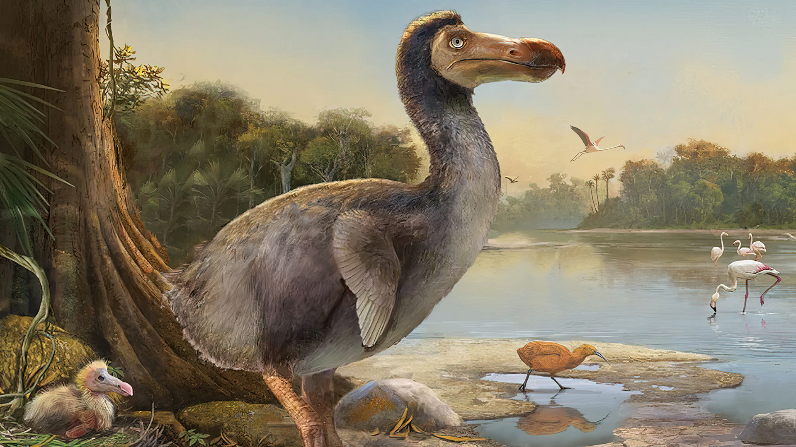

The dodo (Raphus cucullatus) is an extinct flightless bird that was endemic to the island of Mauritius, east of Madagascar in the Indian Ocean. Its closest living relative is the Nicobar pigeon.
Learn MoreHere are some facts about the dodo:
The following factors led to the extinction of the dodo:
